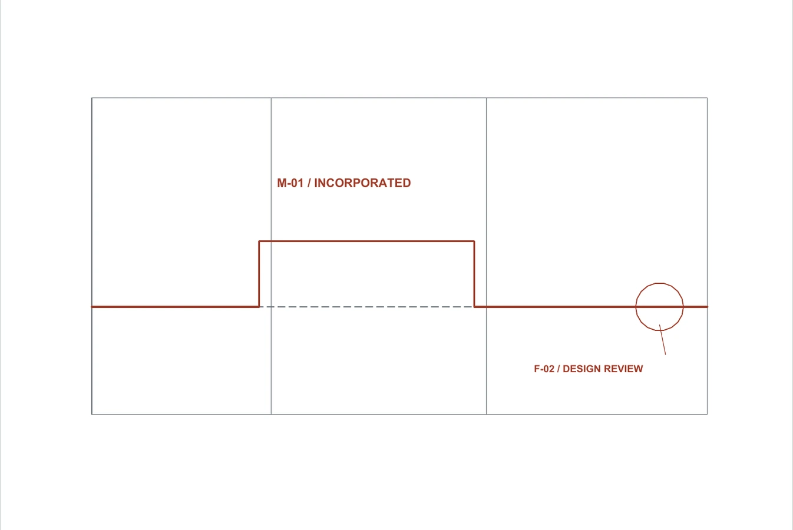

Redlines and record drawings
Apply approved comments to the supplied CAD or BIM files and tie each change back to its source.
Fire sprinkler CAD and BIM support
Send a base drawing and your designer’s approved markups. Get an editable update, a check plot, and a record of what still needs a decision.

Apply approved comments to the supplied CAD or BIM files and tie each change back to its source.
Compare supplied trade views, capture conflicts and update the model from authorized dispositions.
Prepare review sheets and schedules from an approved model when the contractor supplies the extraction and release rules.
Reconcile references, tags and revisions across the CAD files, check plots and issue register.
Your authorized professional or contractor decides the system, layout criteria, equipment and hydraulics. The responsible team verifies field conditions and controls permit, fabrication and installation releases. We draft from accepted instructions and return unresolved questions to that team.
Use a redacted example from a real production queue and involve the person who will check the result.
Share your jurisdiction, source file type, CAD or BIM version and reviewer. We’ll agree how to receive any project files before you send them.
info@skarion.com